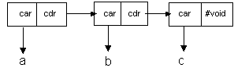

Pair
|
|
Pair
|
The original Lisp was billed as a list processing language. It is one of the oldest computer languages in use today, and was one of the first to implement true Artificial Intelligence techniques. It is the strength of it's list processing features and functionality that makes Lisp the language of choice, in the United States, for such applications as parsing, semantic analysis, and natural language processing. Pairs and Lists together with all of the functions available to manipulate them greatly expand the analytic power of the Analytic Information Server programmer.
The most difficult aspect of Pairs and Lists is their simplest aspect. Pairs are things. Lists are not things. Lists are one way of chaining Pairs together. Lists are not even the only way of chaining Pairs together (albeit an important way but not the only way). Some similar examples from everyday experience would include rain and crowds. Water droplets are things. Rain is not a thing. It is a collection of falling water droplets. There are collections of water droplets that are not rain. Rain is only one way of configuring lots of water droplets. People are things. Crowds are not things. They are collections of people under certain circumstances. Crowds are not the only configuration of lots of people. There are other ways lots of people can be collected together, villages, cities, clubs, etc.
Pairs are very simple objects, which are divided two parts as follows:

The car is the first part of the Pair and the cdr is the last part of the Pair. Both the car and the cdr may contain the full range of Analytic Information Server values: native types, objects, Lambdas, etc. In fact, both the car and the cdr may point to other Pairs, which is how Lists are configured, but that will come later. Once again, Pairs are simple objects which contain two values: a car value and a cdr value.
A Pair can be represented in a constant form as follows:
'( A . B )
In the preceding example, A is the car and B is the cdr. Pairs do not have to contain the same type of values as follows:
'( 1 . "Hello" )
In the preceding example, the car contains the Integer value 1, and the cdr contains the Text value "Hello". Pairs may contain complex objects as follows:
'( #(1 2 3) . (1 . 2) )
In the preceding example, the car contains a reference to the Vector object #(1 2 3), and the cdr contains a reference to the Pair value '(1 . 2). Pairs may refer to other Pairs which may refer to other Pairs, ad infinitum., and that is how Lists can be constructed.
The Pair and List constructs do not have a Visual Basic equivalent. Visual Basic is not suitable for List processing applications.
The Pair is a Heap Object or an Object Data Type. The Analytic Information Server Object Types are stored in the Heap and are managed by the Heap manager. The Analytic Information Server Heap manager supports object resizing, garbage collection, and anti-fragmentation algorithms so that the user may concentrate on the analysis and modeling of data rather than on memory management. Without exception, all of the Object types are identified by an object id. The object id identifies a block of memory, managed by the Lambda Information Server memory manager, in which the Object's data is stored.
The Analytic Information Server Heap Object and Native Data types can be saved and loaded to and from persistent (disk file) storage at any time. Containers with immediate data are saved on disk in fixed length records equal to the size of the container. Containers with Heap object references are saved in fixed length records, which are automatically expanded to include the contents of the Heap object, and any objects referenced by the Heap object, etc. This feature is called Object Closure Management and is automatic with every Analytic Information Server container database save.
Analytic Information Server containers may be loaded from any database repository record at any time. If the data in the record is immediate, the database load fills the container with the immediate data. If the data in the record is an object closure, the database load fills the container with a Heap object reference, and all of the objects in the record are loaded back into the Heap with the same referential relationships they had when they were saved in the repository.
The Pair object can be demonstrated by the following functions.
The Pair object can be demonstrated by the following examples.